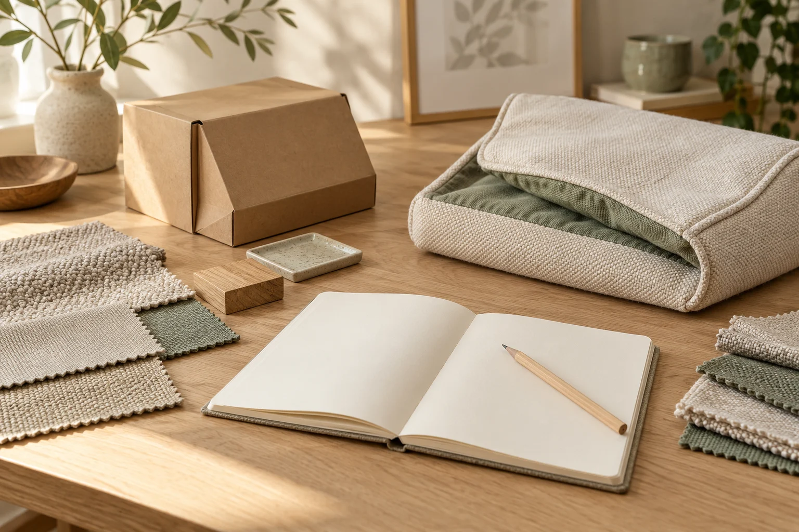

HOW WE WORK / INDEPENDENT SOURCING IN CHINA
One brief.
A clearer way forward.
Five practical stages, adapted to your product, priorities and timeline.
For international pet brands, importers and retailers sourcing cat and dog products. Start with what you know; we can discuss the support your project needs.
Start a Sourcing Inquiry
FROM YOUR BRIEF TO DELIVERY COORDINATION
A practical path through sourcing.
Each stage has a clear purpose.
The scope is agreed around your project.
-
01
Share Your Product Requirements
Tell us about your brand, category, preferred materials, target quantities and timing. We clarify what you need and which stages require support.
Practical next stepAn initial brief to guide the sourcing discussion.
-
02
Supplier Research & Initial Evaluation
Research potential manufacturers and discuss how their options fit your requirements. Identify questions to clarify before requesting detailed proposals.
Practical next stepSupplier options and evaluation notes to discuss.
-
03
Quotations & Sample Coordination
Compare supplier quotations, clarify stated MOQs and coordinate sample requests. Relay your feedback so the product details can be refined.
Practical next stepQuotation information and sample feedback for your order decision.
-
04
Production Follow-up
Keep supplier communication moving and follow up on the production milestones agreed for your project. Raise outstanding questions and reported issues.
Practical next stepUpdates on the milestones included in the agreed scope.
-
05
Delivery Coordination
Follow up on packing and shipment details with suppliers and your chosen logistics partners. Clarify the information needed for delivery arrangements.
Practical next stepPacking and shipment information coordinated with relevant parties.
WHAT YOU CAN EXPECT
Information you can work with.
The types of notes and updates below can be discussed as part of your project scope. They are not automatically included in every engagement.
-
Supplier shortlist & comparison notes
Potential options and questions to clarify.
-
Quotation & MOQ information
Quoted terms and stated order requirements.
-
Sample & customisation updates
Progress, feedback and proposed changes.
-
Production milestone follow-up
Updates on agreed production stages.
-
Shipment coordination updates
Packing and delivery questions followed up.
FLEXIBLE, PROJECT-BASED SUPPORT
Built around your project.
You may need help with one stage, such as supplier research, or several stages of sourcing and order coordination.
We discuss scope, fees and responsibilities before work begins. Timelines and options depend on the product, customisation and supplier availability.
Explore Sourcing ServicesLET’S DISCUSS THE NEXT STEP
Ready to discuss your sourcing project?
Tell us what you're looking to source, your target quantities and any customization ideas. We'll discuss the next steps together.
Start a Sourcing Inquiry